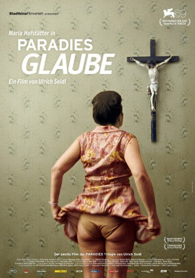

#1262 Paradies 2 - Glaube
Alternativ: Paradise: Faith (Originaltitel)
 
 IMDB-Wertung: 6.8 / 10
IMDB-Wertung: 6.8 / 10  Metascore: 61
Metascore: 61 
Anna Maria hat ihr Leben ganz der Liebe zu Jesus Christus verschrieben. Neben ihrer Arbeit in einem Krankenhaus, gilt ihr sonstiges Bestreben, Österreich wieder katholisch werden zu lassen. Mit einer Wander-Muttergottes besucht sie fremde Haushalte, segnet sie und versucht sie vom rechten Weg im Glauben an Gott zu überzeugen. Dabei kann sie auch offensichtliche Ablehnung nicht abschrecken, denn sie sieht ihre Mühsal als eine von Gott auferlegte Prüfung.
Jahr: 2012
Dauer: 115 Minuten
FSK: 16
Land: Österreich Studio: Neue Visionen FilmverleihTonspuren:
Untertitel: Deutsch,
Auflösung: 1080p (1920x1040) Größe: 7833 MB
Genre: Drama
Regisseur: Ulrich Seidl
Drehbuch: Ulrich Seidl, Veronika Franz
Soundtrack:
Darsteller:
- Maria Hofstätter als Anna Maria
- Nabil Saleh als Nabil
- Rene Rupnik als Herr Rupnik
- Natalya Baranova als Betrunkene Russin
- Trude Masur als Ehepaar
- Dieter Masur als Ehepaar
- Michaela Hurdes-Galli als Frau mit Katze / Legio Herz Jesu
- Gulcan Jafarova als Familie
- Sevinc Jafarova als Familie
- Rafael Asadov als Familie
- Miriam Asadov als Familie
- Jafaraw Rafail als Familie
- Kenan Rafail als Familie
- Martina Spitzer als Legio Herz Jesu
- Heinrich Herki als Legio Herz Jesu
- Daniel Hoesl als Legio Herz Jesu
- Barbara Lehner als Legio Herz Jesu
- Elfriede Wunsch als Legio Herz Jesu
- Roswitha Ziener als Legio Herz Jesu
- Friedrich Vorbeck als Röntgenologe
- Doris Pitschmann als Radiologisch-technische Assistentin
- Katerina Pinc als Radiologisch-technische Assistentin
- Johannes Nowak als Patient Röntgeninstitut
- Elke Sladkovsky als Patientin Röntgeninstitut
- Adel El Timimi als Patient Röntgeninstitut
- Monica Adigibhe als Patientin Röntgeninstitut
- Franz Xaver Schöndorfer als Patient Röntgeninstitut
- Walter Wensky als Sexpartner im Park
- Corinna Buzecky als Sexpartnerin im Park
- Susi Windisch als Sexpartnerin im Park
- Erwin Bauer als Sexpartner im Park
- Viktor Ferstl als Sexpartner im Park
- Gerhard Rath als Sexpartner im Park
- Carl Fau als Sexpartner im Park
- Renate Artner als Sexpartnerin im Park
- Georg Widermann als Sexpartner im Park
- Monika Gaumann als Sexpartnerin im Park
- Günther Brandel als Sexpartner im Park
- Manfred Skerlan als Sexpartner im Park
- Mirnesa Salihbasic als Sexpartnerin im Park
- Peter Vokurek als Sexpartner im Park
- Rolli als Katze
Datei: X:\3-Trilogie(N-Z)\Paradies\Paradies 2 - Glaube (2012, FSK16, 1920x1040).mkv seit 12.06.2015
Festplatte: HD Collection-3(N-Z)-6(A-Z)
 Alle Filme aus Gruppe '3-Trilogie(N-Z)\Paradies'
Alle Filme aus Gruppe '3-Trilogie(N-Z)\Paradies'